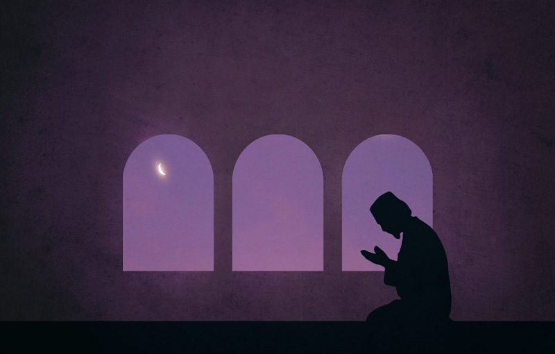
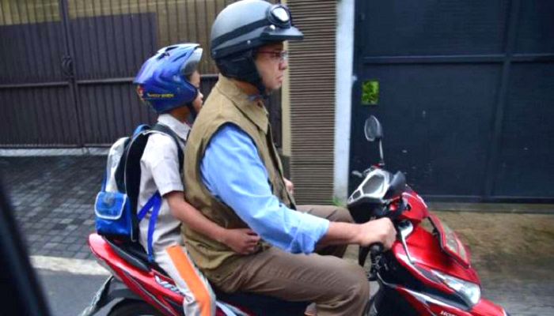
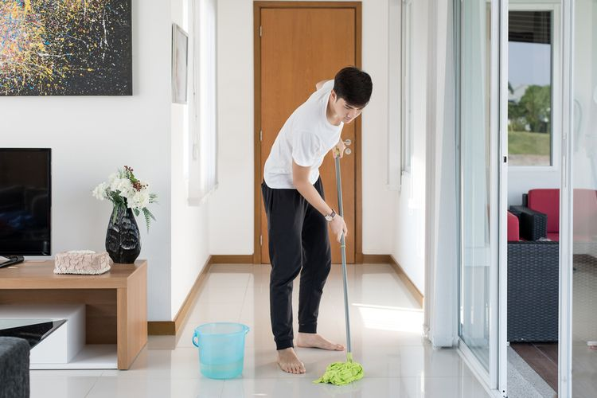
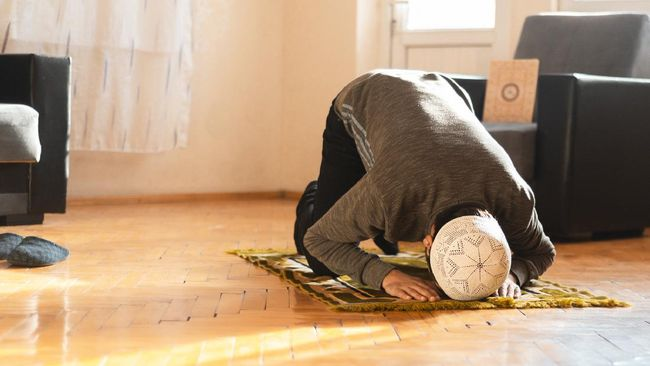
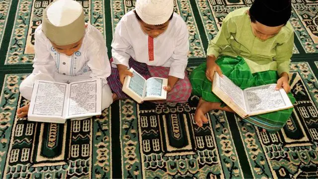

Today's Activities

Pada jam 5 pagi, saya bangun tidur atau bisa lebih cepat. Ketika bangun, saya Salat subuh dan melakukan kegiatan yang lainnya.

Pada jam 7 itu saya mengantar adik saya pergi ke sekolah, dan biasanya sekitar jam 10 saya menjemput adik saya dari sekolah.

Pada jam 9 saya menyapu rumah, mengepel dan biasanya menyuci pakaian yang saya pakai ketika kuliah.

Pada jam 10 sampai jam 12 saya melakukan kegiatan santai. Mungkin itu menonton film, anime, youtube, mendengarkan musik atau mengerjakan tugas kuliah.


Pada Jam 5 sampai jam 9 saya membantu ibu saya mengantar makanan ke rumah-rumah.
Pada jam 9 sampai 10 saya biasanya bersantai (nonton tiktok, mendengarkan musik, atau scroll reels instagram).
Lalu pada jam 10 sampai jam 5 saya tidur Malam.